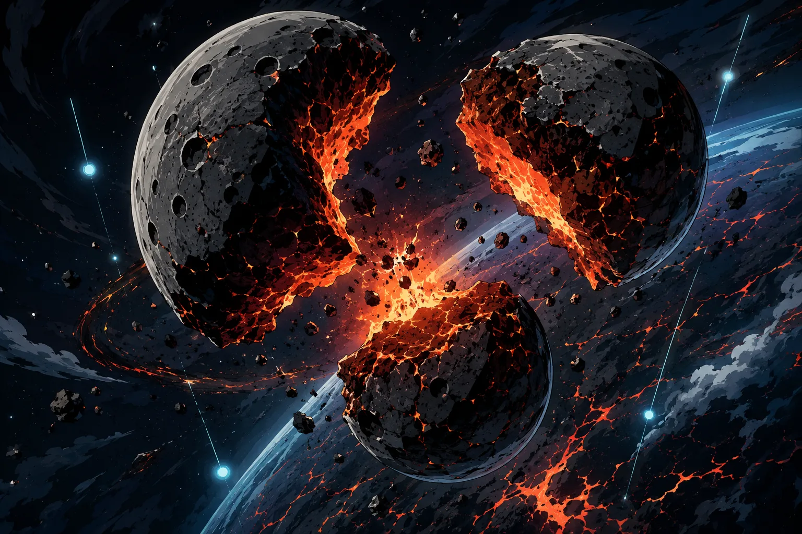

Stable Compendium record
drk-magma-pleuron
Drakken operational dossier / Crust-Binders
Magma Pleuron
Basalt vanguard; tunnels through faultlines, liquefies crust, and seeds stabilized lavaflows and data-rich tectonic overlays.
- Stable ID
drk-magma-pleuron- Structural type
- character-section
- Canon status
- unknown
- Spoiler level
- major
Published source content
Operational role
Basalt vanguard; tunnels through faultlines, liquefies crust, and seeds stabilized lavaflows and data-rich tectonic overlays.
Archetype function
Planetary bones: faultlines, lithosphere, glassfields, minerals, seismicity and deep-earth formatting.
Archival visual references
Incident reference
